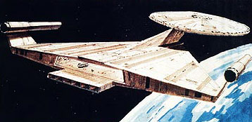
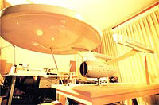
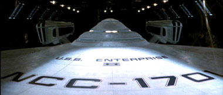
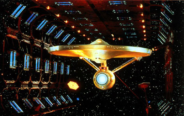
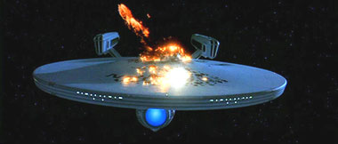
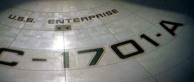
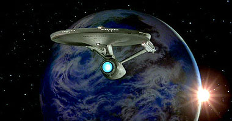

|
Por Fernando
Penteriche
É
um pouco difícil acreditar cegamente que a USS Enterprise que
vemos nos três primeiros filmes de cinema com o elenco clássico
de Jornada nas Estrelas seja realmente a nave da Série
Original, reformada. São tantas, mas tantas alterações, que
seria como alguém pegar um Fiat 147 e transformá-lo em um Palio.
Mas, como é isso o que aprendemos em Jornada
nas Estrelas - O Filme, e que serve perfeitamente aos
propósitos da trama e da saga de Jornada, façamos um esforço
para aceitar.
Quando estava cogitada a retornar para a mídia com algo inédito
que não fossem desenhos animados, lá pelos idos de 1976, ficou
decidido que uma nova nave Enterprise deveria ser criada, afinal,
a dos anos 60 não traria a credibilidade necessária para uma provável
nova produção, e ainda mais cinematográfica. Essa era a aposta
de Gene Roddenberry na época, fazer um longa-metragem da série
para as telonas.
Ralph McQuarrie, que se tornaria famoso por criar naves para "Star
Wars", bolou uma nova nave que lembrava muito vagamente a
Enterprise original. Como o filme acabou sendo cancelado antes
mesmo da pré-produção se iniciar, a idéia de McQuarrie foi por
água abaixo. E ainda bem, pois até hoje tendo alguns defensores,
inclusive no Brasil, esta Enterprise era feia demais!

Quem
acompanha o TB sabe tudo sobre a aposta seguinte para Jornada,
a Fase II, conhecida como "A Série
Que Nunca Existiu". Para essa idéia furada da Paramount, chegou-se
a fazer uma boa pré-produção, que incluiu esboços, algum cenário,
figurinos, maquiagens e uma nova USS Enterprise NCC 1701.
Ao invés de começar do zero, como queria fazer Ralph McQuarrie,
os produtores decidiram apenas atualizar a nave, tendo como base
o modelo original criado pelo lendário Matt
Jefferies na década de 60. Desta vez, trabalhando com
fibra de vidro em vez de madeira, alumínio e outros materiais
utilizados na confecção da nave original, um modelo maior e mais
detalhado pôde ser produzido. Ou, pelo menos, começado a ser.
A nova Enterprise, com design do mesmo Jefferies, traria como
principais modificações sua naceles, agora chatas em vez de cilíndricas
e sem os "coletores de Bussard", as "redomas vermelhas" que ficavam
na frente das naceles. O defletor principal, aquela "antena" na
proa do casco secundário, também seria substituído por algo mais
"moderno", e as inscrições de identificação no casco da nave capitânea
da Frota Estelar sofreriam modificações também.
 Um
modelo chegou a ser produzido, mas como o leitor já deve saber,
a série foi cancelada antes mesmo das câmeras serem ligadas pela
primeira vez no set de filmagem. O motivo foi a desistência da
Paramount em lançar sua própria emissora de televisão em janeiro
de 1978, o que tornou a produção de Jornada
nas Estrelas: Fase II inviável, afinal, a nova série seria
o carro-chefe da UPN (United Paramount Network). A emissora
foi lançada e teve uma série de Jornada na linha de frente de
sua programação. Isso em 1995 e com Jornada nas Estrelas: Voyager,
ou seja, 17 anos depois.

"Admiral, this is an almost totally new
Enterprise."
Willard Decker, Star Trek - The
Motion Picture
Para não jogar no lixo todo o investimento na Fase II,
toda a pré-produção, acertos com os atores, e aproveitando o embalo
do sucesso de "Star Wars" em 1977, a Paramount resolveu
lançar um longa-metragem para o cinema, repetindo a idéia que
tivera, junto com Gene Roddenberry, em 1975. Mas agora, o projeto
sairia do papel, com o veterano diretor Robert Wise no comando.
A tela do cinema é infinitamente maior do que a da televisão,
e assim, uma USS Enterprise mais detalhada precisaria ser criada.
O modelo criado para a Fase II foi colocado de lado, e
um novo, com cerca de dois metros de comprimento, criado. Ainda
usando como base o design criado e atualizado por Matt Jefferies
com colaboração de Joe Jennings, a nova nave contou com idéias
de uma variedade de designers das empresas Abel & Associates e
Magicam, especialistas na construção de miniaturas para filmagens.
Andrew Probert, artista já entrevistado
pelo Trek Brasilis e que foi o responsável pelo desenho
original da Enterprise-D de A Nova Geração, além de ser
o criador do visual do carro-máquina do tempo DeLorean de "De
Volta Para o Futuro", teve em suas mãos a responsabilidade maior
na elaboração da novíssima Enterprise.

"Nós,
da equipe de Jornada nas Estrelas - O Filme, assumimos
o desafio de fornecer um visual que fosse além da concepção televisiva",
contou Probert para o TB em 2001. "Quer dizer, a imagem
iria ser tão maior que precisávamos de um visual à altura, e foi
aí que eu entrei. Meu diretor de arte e efeitos, Richard Taylor,
me passou a tarefa de projetar todos os equipamentos, inclusive
a Enterprise. Sua única exigência foi a de nos atermos às proporções
do projeto de Joe Jennings. Ele também influenciou bastante no
projeto do novo motor de dobra da nave. Mas, fora isso, a nave
foi totalmente uma concepção minha. Permanecemos fiéis a essa
concepção, mas acabamos mudando a maior parte dos detalhes --quase
todos os motores, tubos de torpedos fotônicos, o topo e a base
do disco", conclui o designer.
Probert também teve a idéia de, aproveitando uma fala de Kirk
a Scotty no episódio "The Apple" da Série Clássica,
promover a separação da seção disco e do casco secundário. Mas,
a seqüência não foi para frente, embora alguns esboços tenham
sido feitos, já que outra maquete teria de ser construída para
tal, e o orçamento do primeiro filme de Jornada não permitiria
isso.
Além do visual externo, Andrew Probert trabalhou bastante nos
cenários internos, como a área de carga da nave. Vendo em tela,
fica mais difícil acreditar na versão da "atualização" da nave
original. A área interna parece muito maior, sendo que a nave
continua do mesmo tamanho.

"All right, let's see what she's got!"
James T.Kirk, Star Trek IV - The
Voyage Home
Após a destruição da USS Enterprise, em Jornada
nas Estrelas III, vemos em Jornada
IV o surgimento da NCC 1701-A, nave da classe Constitution
reformada, exatamente como a original. Controvérsias não faltam
a respeito da origem dessa nave. Alguns livros dizem que ela é
a USS Ti-Ho rebatizada, outros que é a USS Yorktown, e
muitos nem nome trazem, dizendo apenas que é uma nave da classe
Constitution que também sofreu a reforma pela qual passou a Enterprise.
Talvez isso não seja importante afinal, já que sempre vale ressaltar
que é oficial para a cronologia de Jornada apenas o que
se vê em tela, seja no cinema ou TV (menos a Série
Animada). Como nunca foi citado nada a respeito da origem
desta NCC 1701-A, cabe aos fãs apenas especular, mesmo que tenha
como base livros da editora oficial de Jornada, a Pocket
Books.

A ponte de comando que vemos no primeiro filme de Jornada
tem aqueles monótonos tons pastel. Ao final de Jornada IV,
na rápida cena de Kirk e a tripulação a bordo da NCC 1701-A, quase
não vemos a ponte, porém em Jornada nas Estrelas V - A Última
Fronteira, Herman Zimmerman, designer de A Nova Geração,
criou todo o cenário, que nos remete a um meio-termo entre o visual
da nave anterior e da ponte de comando da Enterprise-D, criada
pelo mesmo Zimmerman.
Embora seu exterior seja idêntico ao da nave destruída em Jornada
III, a NCC 1701-A traz a óbvia letra "A" pintada nas identificações
do casco. O interior é bem diferente, mas isso varia de filme
para filme. Em Jornada nas Estrelas VI - A Terra Desconhecida,
a ponte já é outra, bem diferente e mais moderna (e que serviu
de base para a ponte da Enterprise-B em "Jornada nas Estrelas
- Generations"), assim como os corredores ou quartos da tripulação.
Tudo gira em torno da necessidade de enredo, e, ao contrário das
séries de TV que têm seus cenários montados no estúdio
durante anos a fio, os dos filmes costumam ser destruídos ou reciclados
para outras produções, logo ao término das filmagens.
Manual Controverso do Sr. Scott
Assim como o material publicado pela FASA há muito tempo, o livro
"Mr. Scott's Guide to Enterprise" não pode ter suas informações
consideradas por completo. O livro, publicado em 1987 pela Pocket
Books e em 1993 pela Editora Aleph no Brasil, traz controvérsias
demais a respeito de datas relacionadas ao universo de Jornada.
Embora não seja canônico (oficial), como todo livro da série,
seja manuais de referências, romances, ou guias de cartografia
estelar, o Manual da Enterprise (como foi chamado no Brasil),
exagera na dose de erros de informação. Publicado antes da Cronologia
de Jornada compilada por Michael Okuda, traz alguns absurdos
como a data 2216 para Jornada nas Estrelas - O Filme (o
correto seria 2271). Porém, as ilustrações e informações técnicas
devem ser apreciadas com carinho, já que é bem pouco o material
de referência a respeito da classe Constitution reformada. Encare
o livro como "ficção dentro da ficção" e divirta-se.
Pela cronologia dita "oficial", a Enterprise original sob comando
de Robert April saiu das docas em 2245. Kirk a assumiu
em 2264, sendo que a Série Clássica durou de 2266
a 2269. A reforma vista no primeiro filme de Jornada
foi de 2269 a 2271. Houve uma obscura missão de cinco anos
entre Jornada - O Filme e Jornada
nas Estrelas II - A Ira de Khan, e em 2277 a nave
foi retirada de serviço e colocada como nave-escola para cadetes.
Em 2285 foi destruída na órbita do planeta Gênesis (Jornada
nas Estrelas III).
Em 2286 a NCC 1701-A foi lançada sob o comando de Kirk
e, ainda de acordo com o livro de Michael Okuda, em 2293,
após os eventos mostrados em Jornada nas Estrelas VI - A Terra
Desconhecida, foi enfim aposentada.
Nada desmente esse fato, afinal, após Jornada VI (1991)
não vimos mais a Enterprise da tela grande, aquela que iniciou
a Aventura Humana em 1979 e nos levou para lugares que a telinha
da TV jamais teria condições. Sejam eles a Nebulosa de Mutara
ou o Centro da Galáxia.
De todas as Enterprises que tiveram destaque, esta sempre foi
a mais misteriosa. Melhor assim, pois os fãs podem preencher os
capítulos da história da USS Enterprise NCC 1701 reformada com
sua vasta, ilimitada e certamente não-canônica imaginação.

Fernando
Penteriche é
editor do
Trek Brasilis
|